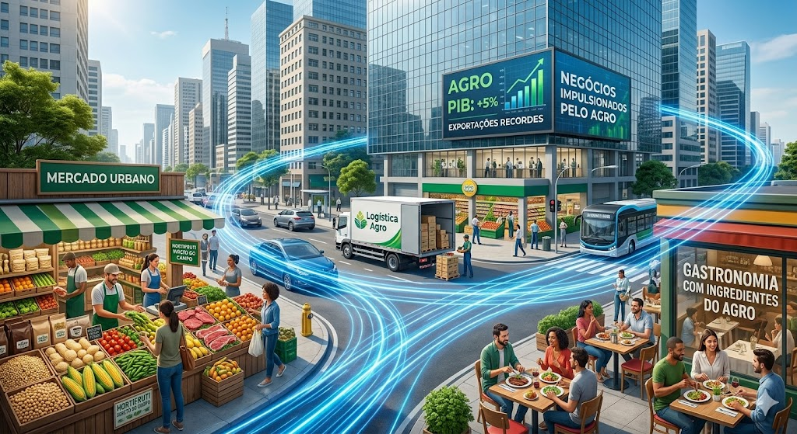
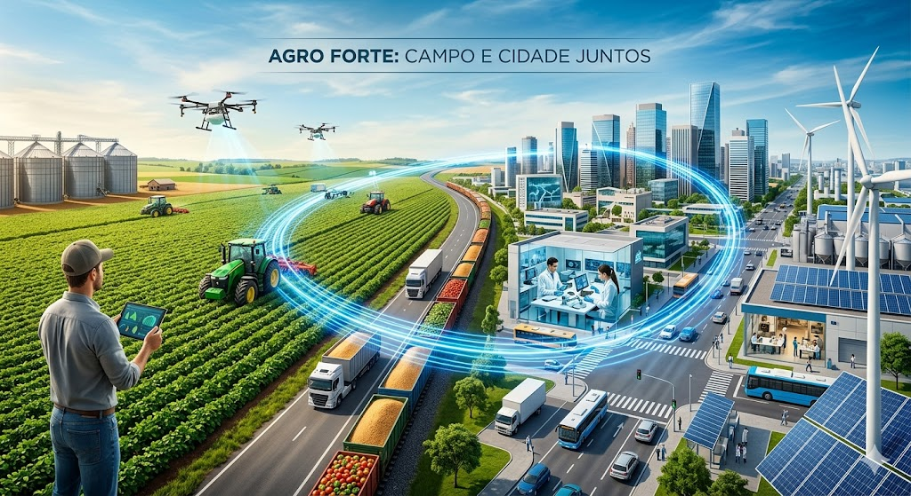

O campo, com sua evolução tecnológica e práticas sustentáveis, impulsiona a produção de alimentos e o crescimento econômico do país. Já a cidade, com sua dinâmica industrial e centros de inovação, promove o desenvolvimento de novas tecnologias e maquinários agrícolas avançados. Apesar das diferenças, a cidade e o campo são interdependentes e fortalecem o agronegócio mutuamente. A cidade depende do campo para o abastecimento essencial e matérias-primas, enquanto o campo depende da cidade para o acesso a biotecnologia, serviços especializados e mercado consumidor.

Apesar de a maior parte da população brasileira viver nos grandes centers, a força do agronegócio está presente em cada aspecto do dia a dia nas cidades. Muito além do alimento que chega à mesa, o setor impulsiona o comércio local, a gastronomia e a realização de grandes rodadas de negócios. A conexão entre o campo e a metrópole é constante: a riqueza e a produtividade geradas nas lavouras e pastagens movimentam a economia urbana, gerando empregos e consolidando uma identidade de progresso que une todo o país.

Fonte das imagens: Google, Gemini e Arquivos Locais.